UDN
Search public documentation:
AnimSetEditorUserGuideCH
English Translation
日本語訳
한국어
Interested in the Unreal Engine?
Visit the Unreal Technology site.
Looking for jobs and company info?
Check out the Epic games site.
Questions about support via UDN?
Contact the UDN Staff
日本語訳
한국어
Interested in the Unreal Engine?
Visit the Unreal Technology site.
Looking for jobs and company info?
Check out the Epic games site.
Questions about support via UDN?
Contact the UDN Staff
UE3主页 > 虚幻编辑器和工具 >动画集编辑器用户指南
UE3主页 >动画 >动画集编辑器用户指南
UE3 主页 > 动画师 > 动画集编辑器用户指南
UE3 主页 > 过场动画制作人员 > 动画集编辑器用户指南
UE3主页 >动画 >动画集编辑器用户指南
UE3 主页 > 动画师 > 动画集编辑器用户指南
UE3 主页 > 过场动画制作人员 > 动画集编辑器用户指南
动画集编辑器用户指南
概述
打开AnimSet(动画集)编辑器
动画集编辑器界面
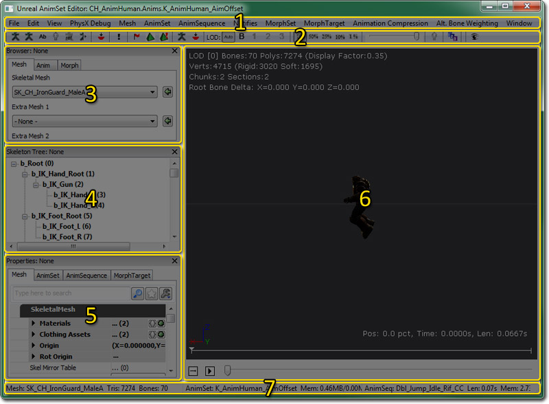
- 菜单条
- 工具条
- 浏览器面板 - Mesh(网格物体)、Anim（动画）和Morph（顶点变形）标签允许您浏览已加载的骨架网格物体、动画集和动画序列、以及顶点变性目标集和序列。
- 骨架树面板 - 浏览器面板中当前选中的骨架网格物体的骨架的层次结构树形图。
- 属性面板 - 网格物体、动画集、动画序列或顶点变形目标的属性。
- 预览面板 - 预览浏览器面板中选中的骨架网格物体上的类似于布料、插槽等的动画、仿真。
- 状态条 - 显示了和当前选中的骨架网格物体(左侧)和动画序列(右侧)相关的名称和信息。
菜单条
文件
- Import Mesh LOD(导入网格物体LOD)... - 针对某特定LOD导入一个LOD网格物体。
- New AnimSet(新建动画集) - 创建一个新的、空的动画集。
- Import PSA(导入PSA) - 将包含在.PSA文件中的动画序列导入到当前选中的动画集中。
- Import COLLADA Animation(导入COLLADA 动画) - 将COLLADA 文件中的动画序列导入到当前选中的动画集中。
- New MorphTargetSet(新建顶点目标集) - 创建一个新的MorphTargetSet(顶点目标集)。
- Import MorphTarget(导入顶点变性目标) - 将一个顶点变形目标(.PSK文件)导入到选中的MorphTargetSet（顶点变性目标集）中。
- Import MorphTarget LOD(导入顶点变性目标LOD) - 针对某特定LOD导入一个LOD顶点变形目标。
编辑
- UNDO(取消) – 取消上一次执行的操作。
- REDO(重复) – 执行上一次取消的操作。
视图
- Show Skeleton(显示骨架) - 切换当前骨架网格物体的骨架的显示状态。
- Show Additive Base(显示累加型动画的基本姿势) - 当查看累加型动画时显示基本姿势。
- Show Bone Names(显示骨骼名称) - 在预览面板中切换当前选中的骨架网格物体的骨架中的骨骼的名称。
- Show Reference Pose(显示参考姿势) - 强制在预览面板中渲染骨架网格物体的默认参考姿势。
- Cycle Mesh Rendering(循环切换网格物体渲染模式) - 在带光照、线框和不带光照间循环(为了使骨架网格物体查看更加容易)。
- Show Mirror(显示镜像) - 这个选项显示当前在网格物体上镜像的动画。为了是这选项可以使用，您必须为它设置一个有效地镜像表。请参照动画镜像页面获得更多信息。
- Show Floor(显示地平面)
- Show Grid(显示网格) - 切换预览面板中网格的显示状态。
- Show Sockets(显示插槽) - 切换预览面板中当前骨架网格物上的任何插槽的显示状态。
- Show Bounds(显示边界) - 切换预览面板中当前骨架网格物体的边界的显示状态。
- Show Collision(显示碰撞) - 切换预览面板中当前骨架网格物体的碰撞几何体的显示状态。
- Show Uncompressed Animation(显示未压缩的动画) - 切换预览未压缩的动画，而不是压缩的动画版本。
- Show Soft Body Tetra(显示软体四面体) - 切换预览面板中当前骨架网格物体的软体四面体网格物体的显示状态。
- Show Morph Keys(显示顶点变形关键帧) - 切换预览面板中动画数据的顶点变形关键帧权重信息的显示状态。
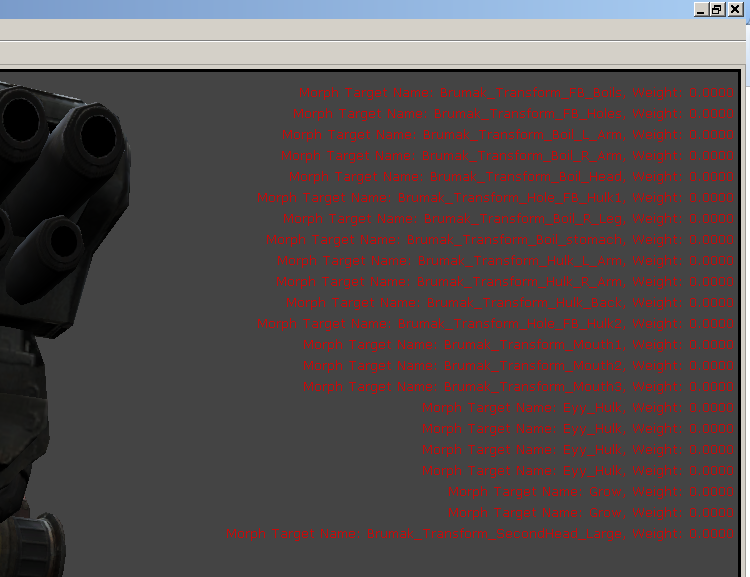
- Alt. Bone Weighting Edit(可替换的骨骼权重编辑模式) - 允许您查看及编辑选中骨骼的可替换的骨骼权重，这项仅当为当前LOD启用了可替换骨骼权重时有效。
- Show Tangent(显示切线)
- As Vector(作为向量) - 显示选中的材质部分的每个顶点的切线，并且您可以选择顶点来查看信息。
- As Texture(作为贴图) - 映射切线向量到贴图UV– 有助于可视化向量的方向。
- Show Normal(显示法线)
- As Vector(作为向量) - 显示选中的材质部分的每个顶点的法线，并且您可以选择顶点来查看信息。
- As Texture(作为贴图) - 映射切线向量到贴图UV– 有助于可视化向量的方向。
- Show Mirror(显示镜像) - 切换UV映射的镜像信息的显示状态。
- Show Material Section(显示材质部分) - 设置用于显示 切线/法线/镜像 的材质部分。
网格物体
- Set LOD Auto(设置自动LOD) - 在预览面板中根据屏幕上骨架网格物体的大小使用自动LOD变换。
- Force LOD Base Mesh(强制显示基础LOD网格物体) - 强制预览面板显示骨架网格物体的基础LOD网格物体。
- Force LOD 1(强制显示LOD1的网格物体) - 强制在预览面板中显示骨架网格物体的LOD1网格物体。如果LOD1网格物体不存在，那么将禁用该项。
- Force LOD 2(强制显示LOD2的网格物体) - 强制在预览面板中显示骨架网格物体的LOD2网格物体。如果LOD2网格物体不存在，那么将禁用该项。
- Force LOD 3(强制显示LOD3的网格物体) - 强制在预览面板中显示骨架网格物体的LOD3网格物体。如果LOD3网格物体不存在，那么将禁用该项。
- Generate An LOD - 自动为骨架网格物体生成一个 LOD。请参阅骨架网格物体简化工具了解详细信息。
- Remove An LOD(移除LOD) - 从骨架网格物体中移除特定的LOD网格物体。
- Auto-build Mirror Table(自动构建镜像表)
- Check Mirror Table(检查镜像表)
- Copy Mirror Table to Clipboard（将镜像表复制到剪切板） - 复制镜像表的内容到剪切板。
- Copy Mirror Table From Selected SkelMesh(从选中的网格物体复制镜像表)
- Update Bounds(更新边界) -强制重新计算骨架网格物体的边界。
- Copy Bones Names To Clipboard(复制骨骼名称到剪切板) - 复制骨架网格物体中所有骨骼的名称到剪切板。
- Merge Mesh Materials(融合网格物体材质)
- Fixup Bone Names(修复骨骼名称)
- Socket Manager(插槽管理器) - 打开插槽管理器，来查看、编辑、添加或删除骨架网格物体中的插槽。
动画集
- Reset AnimSet(重置动画集)
- Delete Track(删除轨迹) 删除当前AnimSet(动画集)的所有动画的骨骼轨迹。
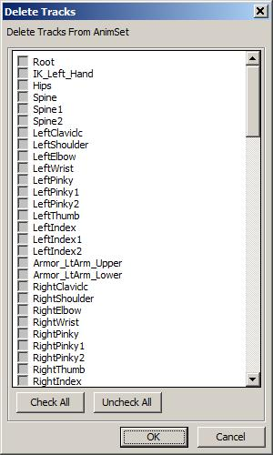
- Delete Morph Track(删除变形轨迹) 删除当前AnimSet中的所有动画的顶点变形关键帧。

动画序列
- Rename Sequence(重命名序列) - 在浏览器面板中重命名当前选中的动画序列。
- Delete Sequence(s)(删除序列) - 删除浏览器面板中当前选中的任何动画序列。
- Copy Sequence(s) to current or selected AnimSet(复制序列到当前的或选中的动画集) - 复制浏览器面板中当前选中的动画序列到内容浏览器中当前选中的动画集。如果在内容浏览器中没有选中动画集，那么这将在浏览器面板中的当前选中的动画集内创建一个具有该新名称的副本。
- Move Sequence(s) to selected AnimSet(移动序列到选中的动画集) - 将浏览器面板中当前选中的动画序列移动到内容浏览器中当前选中的动画集内。
- Convert Sequence(s) to Additive Animation(转换动画序列为累加型动画)
 第一步是选择构建方法。这就是如何处理Base Pose(基础姿势)以进行动画相减操作。
第一步是选择构建方法。这就是如何处理Base Pose(基础姿势)以进行动画相减操作。
| Reference Pose (参考姿势) | 使用网格物体的Bind Pose(绑定姿势)作为Base Pose(基础姿势)。 |
| Animation First Frame(使第一帧产生动画) | 使用选中的Base Pose(基础姿势)动画的第一帧产生动画。 |
| Animation Scaled(动画缩放) | 如果Base Pose (基础姿势)动画和目标动画的长度不同，那么缩放基础姿势动画为目标动画的长度 (默认情况下) 。 |
| Looping Animation(循环动画) | 这用于为循环动画处理从最后一帧到第一帧的插值。这项只有在Target(目标)动画和Base(基础)动画的长度不一样时才有效。 |
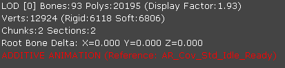
访问动画概述页面来获得关于叠加型动画的更多信息 动画概述#叠加型动画。- Rebuild Additive Animation(s)（重新构建累加型动画） -
- Add Additive Animation to selected Sequence(s)(添加累加型动画至所选序列) - 打开一个对话框供您选择可用的累加型动画，以便将它添加到浏览器面板中当前选中的动画序列中。
- Subtract Additive Animation to selected Sequence(s)(从所选序列序列减去累加型动画) - 打开一个对话框供您选择可用的累加型动画，以便从浏览器面板当前选中的动画序列中减去该累加型动画。
- Copy Sequence Name to Clipboard(复制序列名称到剪切板) - 复制浏览器面板中最后一个选中的动画序列的名称到剪切板上。
- Copy Sequence Name List to Clipboard(复制序列名称列表到剪切板) -复制浏览器面板中当前选中的动画集内的所有动画序列的名称列表到剪切板。
- Apply Rotation(应用旋转) -向浏览器面板中选中的动画序列的指定坐标轴周围应用特定的旋转度数。
- ReZero On Current Position(在当前位置归零)
- Remove Before Current Position(删除当前位置前面的动画序列)
- Remove After Current Position(删除在当前位置后面的动画序列)
通知
- New Notify(新建通知) - 添加一个新的动画通知。
- Copy Notifies(复制通知) - 将当前动画序列的动画通知复制到指定的目标动画序列中。
- Sort Notifies(排序通知) - 重新排序当前动画序列的动画通知，以便它们在数组中按顺序排列。
- Shift Notifies(变换通知) - 将当前序列的所有动画通知变换移动指定的时间量。
- Enable All PSys Previews(启用所有的粒子特效预览) - 在预览器面板中启用任何粒子特效预览的通知。
- Disable All PSys Previews(启用所有的物理特效预览) - 在预览面板中禁用任何粒子特效预览的通知。
顶点变形集
- Update Morph Targets(更新顶点变形目标) - 重新映射顶点变形目标的顶点缓冲索引到基础网格物体。如果您加载它时已经检测到了索引变化，那么这将会自动进行处理。 这仍然是一个未成熟的功能，但是仅当基础网格物体的权重被修改时才会进行修复。如果顶点顺序或位置在Maya或3ds Max中被改变，那么这个功能无效。
MorphTarget(顶点变形目标)
- Delete Morph Target(删除顶点变形目标) - 删除浏览器面板中选中的顶点变形目标。
动画压缩
- Animation Compression(动画压缩)... 打开动画压缩对话框。
可替换的骨骼权重
- Import Mesh Weights（导入网格物体权重）... - 导入可替换的网格物体权重，将用作为完全的权重替换(高级骨骼绑定vs游戏骨骼绑定)或部分的权重替换(血腥网格物体)。
- Toggle Mesh Weights(切换网格物体权重)... - 切换可替网格物体权重的打开或关闭状态。
- Show All Mesh Vertices(显示所有网格物体顶点)... - 当处于可替换权重编辑模式(蓝色)时显示所有的网格物体顶点，这可以和显示选中骨骼(红色/白色)的加权顶点作比较。
- Delete Bone Break Vert Weightings(删除骨骼破环时的顶点权重)... 使用 [Calculate Bone Break Vert Weightings(计算骨骼破坏时的顶点权重)] 来 删除/重置 骨骼破坏时的顶点权重。清除 BreakBoneNames(破坏的骨骼名称) 及相关数据。
窗口
- Browser(浏览器): - 显示浏览器面板。
- Properties(属性): - 显示属性面板。
- Skeleton Tree(骨架树) - 显示骨架树面板。
工具条
| 图标 | 描述 |
|---|---|
| 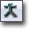 | 切换当前骨架网格物体的骨架的显示状态。 |
 | 当查看累加型动画时显示基础姿势。 |
 | 这个选项切换预览面板中骨骼名称的显示状态。 |
| 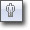 | 在带光照、线框和不带光照间循环(从而使骨架网格物体查看更加容易)。 |
 | 强制在预览面板中渲染骨架网格物体的默认参考姿势。 |
 | 这个选项显示当前在网格物体上镜像的动画。为了是这选项可以使用，您必须为它设置一个有效地镜像表。请参照动画镜像页面获得更多信息。 |
| 这个选项打开插槽管理器。 | |
| 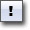 | 这个选项允许您给当前动画序列添加新的动画通知。还可以添加自定义动画通知 (Custom AnimNotify) 按钮。请参阅Custom AnimNotify按钮了解详细信息。 |
| 这个选项切换顶点布料的仿真。 | |
 | 这个选项使用网格物体属性中的当前设置生成新的软体四面体网格物体。 |
| 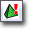 | 这个选项切换软体预览仿真。 |
| 这个选项切换预览未压缩的动画，而不是压缩的动画。 | |
 | 打开动画压缩对话框。 |
| 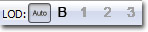 | 这项允许您根据预览面板中网格物体的大小来强制设置显示指定的LOD网格物体或者使用自动LOD变换。 |
 | 允许指定的块或部分可见，此外还可以看到整个骨架网格物体。请参阅查看块和部分。 |
| 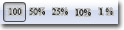 | 从 Full Speed(全速) 、 0.5 Speed(全速的0.5倍) 、 0.25 Speed(全速的0.25倍)_ 、 0.1 Speed(全速的0.1倍) 、 或者 0.01 Speed(全速的0.01倍) 中进行选择。 |
 | 允许可视化显示骨架网格物体上的半透明材质的三角形描画顺序。请参照半透明毛发排序。 |
| 查看及编辑选中骨骼的可替换骨骼权重。 | |
 | 请参照半透明毛发排序页面。 |
 | 为TRISORT_CustomLeftRight选择是编辑左侧描画顺序还是编辑右侧描画顺序。请参照半透明毛发排序。 |
 | 这个选项切换自动重新导入动画功能。 |
 | 这个选项允许您在 Preview Pane（预览面板） 中设置相机的视野(FOV)。 |
浏览器面板
网格物体选项卡
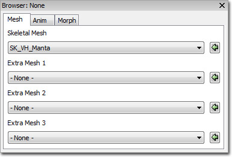
- Skeletal Mesh(骨架网格物体) - 设置要在动画集编辑器中预览的骨架玩格物体。动画将会应用到这个网格物体上。
- Extra Mesh (额外的网格物体)(1-3) - 选择额外的骨架网格物体来在预览面板中预览。这些网格物体上不应用动画。
动画选项卡

- AnimSet(动画集) - 选择一个动画集，它将会填充动画序列列表。
- Animation Sequences(动画序列) - 显示选中的动画集中的所有动画序列。将会在预览面板中预览选中的动画序列。
顶点变形选项卡
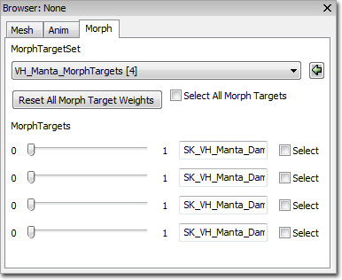
- MorphTargetSet(顶点变形目标集) - 选择顶点变形目标集，选中的目标集将会填充顶点变形目标列表。
- MorphTargets(顶点变形目标) - 显示选中的顶点变形目标集中的所有的顶点变形目标。可以修改其权重来在预览面板中预览效果，并且可以修改它的名称。
骨架树面板
在Windows(窗口)菜单下，您会看到用于打开骨架层次结构的选项。 这里您将会看到选中网格物体相关的骨架的组成结构。
简单地点击一个骨骼，将会在模型上选中那个骨骼，并提供一个控件来操作那个骨骼。 在视口中按下空格键将会在平移控件和旋转控件间切换。 当您操作控件时，您将会看到当前 动画/骨架 姿势的运动时间间隔。 在操作的过程中点击另一个骨骼将会重置前一个骨骼。
以 粗体 形式显示的骨骼意味着在那个骨骼上有一个或多个顶点。
这里您将会看到选中网格物体相关的骨架的组成结构。
简单地点击一个骨骼，将会在模型上选中那个骨骼，并提供一个控件来操作那个骨骼。 在视口中按下空格键将会在平移控件和旋转控件间切换。 当您操作控件时，您将会看到当前 动画/骨架 姿势的运动时间间隔。 在操作的过程中点击另一个骨骼将会重置前一个骨骼。
以 粗体 形式显示的骨骼意味着在那个骨骼上有一个或多个顶点。
 右击一个骨骼将会弹出一个菜单选项。
右击一个骨骼将会弹出一个菜单选项。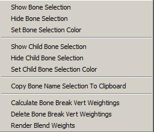
在这里您可以：- Show the selected bone(显示选中的骨骼)
- Hide the selected bone(隐藏选中的骨骼)
- Set a render color for the selected bone(设置选中骨骼的渲染颜色)
- Show the selected bone's children(显示选中骨骼的子节点)
- Hide the selected bone's children(隐藏选中的骨骼的子节点)
- Copy the entire bone hierarchy as text to the clipboard(将整个骨骼层次作为文本复制到剪切板)
- 计算这个骨骼和它的父项之间的可替换骨骼权重的骨骼破坏影响力： 这项仅在Alt. Bone Weighting Edit Mode(可替换骨骼权重编辑模式)中有效 。
- 删除/重置 所有骨骼的可切换骨骼权重的骨骼影响破坏： 这项仅在Alt. Bone Weighting Edit Mode(可替换骨骼权重编辑模式)中有效 。
- 启用及禁用定点混合权重渲染

可替换的骨骼权重编辑模式(骨骼影响点编辑 )
引擎支持一种存储每个骨架网格物体的可替换骨骼 权重/影响点“轨迹” 的观念。 在运行时，这些轨迹可以基于每一组骨骼进行交换，允许从主要骨架网格物体完全断开。 每个被指定骨骼影响的顶点在替换轨迹上被切换为一组新的骨骼权重。 可能的效果包括由于把一个人物的四肢从躯干分离开来所产生的血腥。 为了设置这个功能，美术工作者首先要在DCT中创建多个网格物体，一个网格物体具有正常运动过程中的骨骼影响，另一个具有所有适当的四肢或加了不同权重的网格物体部分，从而支持从主要躯干上的分离效果。 当导入第一个网格物体后，可切换的权重网格物体可以通过Alt. Bone Weighting:Import Mesh Weights导入。选择您想导入的LOD。它将会再次要求提供这LOD的原始网格物体和新的可选择的网格物体。 它假设并要求网格物体之间的顶点索引相匹配。 从这个网格物体中，它将会存储一个关于骨骼影响点和它们LOD权重的新列表。 将会出现提示询问这个可替换骨骼轨迹是用于FULL（完全）还是PARTIAL（部分）权重交换。 完全权重替换正如它的字面意思所示。 当在这个LOD上切换顶点权重时，会使用可替换轨迹数据替换每个顶点骨骼权重。 另外，模型上的RequiredBones数组会更新，从而告诉动画系统正在使用一组不同的骨骼来给网格物体添加权重。 部分权重交换基于每个骨骼工作，当特定关节断裂产生血腥类型的特效时它指出将要切换权重的顶点。 现在，网格物体已经有了一个可替换的影响轨迹，如果您已经选择了PARTIAL(部分)权重，那么必须指定骨骼断裂情况。 首先通过工具条启用可替换的骨骼权重编辑(骨骼影响点编辑)。请确保您正在使用可以选择的正确的LOD。如果当前的LOD没有可替换的骨骼权重，那么这个菜单将处于禁用状态。当在编辑模式中，您不可以改变LOD。 在骨架树中，点击所有和它的父项产生断裂的骨骼。 可以一次选择一个骨骼，或者选择多个。 注意每个选中骨骼的红色的顶点将会出现在视图中。 这些红色顶点代表了选中的骨骼机器父项所影响的所有顶点。 右击并选择"Calculate Bone Break Vert Weightings(计算骨骼破坏时的顶点权重)"。 如果有任何顶点既受到选中骨骼的影响又受到选中骨骼的父项的影响，那么这个顶点将会变为白色。
右击并选择"Calculate Bone Break Vert Weightings(计算骨骼破坏时的顶点权重)"。 如果有任何顶点既受到选中骨骼的影响又受到选中骨骼的父项的影响，那么这个顶点将会变为白色。
 当那个骨骼的破坏在游戏中发生时，这些白色的顶点将会交换影响点。 请使用 平移/旋转 控件来查看影响点交换的结果。 注意，在上面的例子中，是完全的分离，没有任何顶点再次伸展到躯干上。 计算骨骼破裂的算法非常的简单，如果由于某些顶点没有被加权到这两个骨骼上，它们仍然可以手动地添加到破坏部分而没有找到这些顶点，你怎么可以手动地将这些顶点添加爱到破裂的骨骼中。 简单地点击一个红色的顶点，它将会变为白色，把它本身添加到列表中，并移除那个伸展。 您也可以按照同样的方式来移除顶点。
每次产生一个破坏时，骨骼的名称会被添加到SkeletalMesh的BoneBreakNames变量中。 这个数组也可以维护重新导入的网格物体，并且破坏计算将会自动地重新进行。 这个过程不包含任何在最后一次导入中制作顶点列表的手动操作。
当那个骨骼的破坏在游戏中发生时，这些白色的顶点将会交换影响点。 请使用 平移/旋转 控件来查看影响点交换的结果。 注意，在上面的例子中，是完全的分离，没有任何顶点再次伸展到躯干上。 计算骨骼破裂的算法非常的简单，如果由于某些顶点没有被加权到这两个骨骼上，它们仍然可以手动地添加到破坏部分而没有找到这些顶点，你怎么可以手动地将这些顶点添加爱到破裂的骨骼中。 简单地点击一个红色的顶点，它将会变为白色，把它本身添加到列表中，并移除那个伸展。 您也可以按照同样的方式来移除顶点。
每次产生一个破坏时，骨骼的名称会被添加到SkeletalMesh的BoneBreakNames变量中。 这个数组也可以维护重新导入的网格物体，并且破坏计算将会自动地重新进行。 这个过程不包含任何在最后一次导入中制作顶点列表的手动操作。

属性面板
网格物体属性
骨架网格物体- Materials(材质) - 用于给网格物体分配材质的材质插槽数组。
- Clothing Assets(布料资源) -
- Origin(原点) - 网格物体平移的偏移量。
- Rot Origin(旋转度原点) - 网格物体的旋转的偏移量。
- Skel Mirror Table(骨架镜像表） -
- Skel Mirror Axis(骨架镜像坐标轴) -
- Skel Mirror Flip Axis(骨架镜像反转坐标轴) -
- Bone Break Names(破坏的骨骼的名称) -
- Bone Break Options(骨骼破坏选项) -
- LODInfo(LOD信息) - 骨架网格物体的LOD列表。每个LOD包含以下信息：
- Display Factor(显示因数) - 在设置屏幕上的网格物体大小为多少时开始使用这个LOD。
- LODHysteresis(LOD滞后) - 一种经验系数，用于确保当网格物体从一个LOD变换到另一个LOD时不会产生闪烁现象。仅当从一个用于复杂网购物的LOD到一个简单网格物体的LOD变换时使用。
- LODMaterial Map(LOD材质映射) - 映射到基本网格物体的材质数组的材质插槽，可以设置或覆盖这个LOD的网格物体上所使用的材质。
- Enable Shadow Casting(启用阴影投射) - 针对每个部分设置是否投射阴影。
- Triangle Sorting(三角形排序) - 每部分三角形排序所使用的方法。
- Per Poly Collision Bones(基于每个多边形碰撞的骨骼) - 一个骨骼列表，该列表中骨骼所影响的多边形使用基于每个多边形的碰撞。
- Add To Parent Per Poly collision Bone - 一个骨骼列表，该列表中的骨骼会在Per Poly Collision Bones (基于每个多边形碰撞的骨骼)中寻找它们的父项，并把子项的多边形添加到父项中。
- Per Poly Use Soft Weighting(每个多边形使用软加权) - 如果该项为true，那么包括用于基于每个多边形碰撞的任何软加权到骨骼上的三角形。
- Force CPUSkinning(强制CPU植皮) - 如果该项为true，那么强制在CPU上执行植皮。对于使用布料仿真的情况来说这是必要的。
- Use Full Precision UVs(使用全精度UVs) - 如果该项为true，那么使用全精度(16位)UVs，而不是使用标准的半精度(8-位)UVs。
- Use Packed Position(使用压缩的位置) -如果true，那么使用压缩位置XTZs (4个字节的空间保存8个字节的数据)。仅当使用GPU植皮时有用。
- FaceFX Asset(FaceFX 资源) - 设置当播放脸部动画时这个骨架网格物体所使用的FaceFX资源。
- Bounds Preview Asset（边界预览资源） - 设置预览面板中用于预览边界所使用的资源。当设置LOD距离系数时可以改进可靠性。
- Preview Morph Sets(预览顶点变形集) - 预览面板中用于预览顶点变形目标所使用的资源。仅在编辑器中使用。
- LODBias PC(PC上的LOD偏移) - PC上的LOD偏移量。这是将要使用的最高的LOD（细节程度最高）。
- LODBias PS3(PS3上的LOD偏移) - PS3所使用的LOD偏移量。这是将要使用的最高的LOD（细节程度最高）。
- Source File Path(源文件路径) - 显示了用于导入资源的文件系统路径。
- Source File Timestamp(源文件时间戳) - 显示了源文件的时间。
- Cloth Movement Scale Gen Mode(布料缩放比例生成模式) - 设置生成ClothMovementScale表格所使用的方法。
- ECMDM_DistToFixedVert -
- ECMDM_VertexBoneWieght -
- ECMDM_Empty -
- Cloth To AnimMesh Max Dist(布料到动画网格物体的最大距离) - 设置从仿真布料顶点可以从其动画位置处移动的最大距离。
- Limit Cloth To Anim Mesh(限制布料到动画网格物体的距离) - 如果该项为true，将会限制顶点可以从其动画位置处开始移动的距离。
- Cloth Bones(布料骨骼) - 骨骼名称的数组，将会使用布料物理仿真来模拟数组中所包含的骨骼的顶点。
- Cloth Hierarchy Levels(布料层次级别) - 如果该项大于0，那么布料仿真将会在内部将布料细分较小的网格物体，以便改进仿真时间并降低伸展程度。这个值是指布料细分的次数。
- Enable Cloth Bend Constraints(启用布料混合约束) - 如果该项为true，那么将会把约束应用到布料上，以便最小化曲率或折叠。
- Enable Cloth Damping(启用布料阻尼) - 如果该项为true，那么将会给布料应用阻尼。
- Use Cloth COMDamping(使用布料COM阻尼) - 如果该项为true，那么布料内部速度将应用质量中心阻尼。
- Cloth Stretch Stiffness(布料拉伸强度) - 设置用于保持粒子和布料在一起的弹力强度。
- Cloth Bend Stiffness(布料混合强度) - 设置使得布料停止混合或折叠的强度。需要设置 Enable Cloth Bend Constraints(启用布料混合约束) 。
- Cloth Density(布料密度) - 这个值和共享一个点的三角形的尺寸相乘来计算这个点的密度。当已经创建了不了后就不能修改这个值。
- Cloth Thickness(布料厚度) - 当计算碰撞时设置所认为的布料厚度是多少。
- Cloth Damping(布料阻尼) - 设置应用到布料粒子上的阻尼力的大小。需要设置 Enable Cloth Damping(启用布料阻尼) 为true。
- Cloth Iterations(布料迭代次数) - 设置布料仿真所执行的解决方案迭代的次数。较高的值可以改进仿真的质量，但缺点是计算会带来更大的性能消耗。
- Cloth Hierarchy Iterations(布料层次结���迭代次数) - 如果使用布料层次结构细分，那么这个值决定了每个子网格物体所执行的解决方案迭代次数。
- Cloth Friction(布料摩擦力) - 设置布料的摩擦力因数；当布料和其他刚体接触时，该项用于控制布料的运动。
- Hard Stretch Limit Factor(硬拉伸限制因数) - 设置布料中所允许的拉伸量。值1.0意味着没有拉伸，但是可以产生抖动效果。需要设置 Hard Stretch Limit(硬拉伸限制) 为true。
- Hard Stretch Limit(硬拉伸限制) - 如果该项为true，那么将限制布料仿真所允许的拉伸量。需要设置 Limit Cloth To Anim Mesh(限制布料到动画网格物体的距离) 为true。
- Enable Cloth Line Checks(启用布料线性检测) - 如果该项为true，那么将对布料应用光线投射来进行线性检测，但是会对布料AABB执行扫过区域检测。
- Enable Cloth Tearing(启用布料撕裂) - 如果该项为true，那么将沿着顶点间的边缘撕裂布料。这要求额外的 顶点/索引 保留使用 Cloth Tear Reserve(布料撕裂保留) 属性。*注意:* 当使用融合时禁用了撕裂功能。
- Cloth Tear Factor(布料撕裂因数) - 当启用布料撕裂功能时，该项设置了在布料被撕裂之前布料可以产生的拉伸量。
- Cloth Tear Reserve(布料撕裂保留) - 设置构成由于布料撕裂所创建的新三角形而预留的 顶点/索引 数量。
- Enable Valid Bounds(启用有效边界) - 如果该项为true，那么将会删除超出其有限边界的任何布料顶点。
- Valid Bounds Min（有限边界最小值） - 设置有效边界的最小维度。
- Valid Bounds Max(有效边界最大值) - 设置有效边界的最大维度。
- Force No Welding(强制没有融合) - 如果该项为true，那么将禁用融合功能，即时网格物体具有重复的顶点也不融合。
- Cloth Relative Grid Spacing(布料的相对网格间隔) - 设置当执行粗侧阶段的碰撞检测时布料被分割为的网格单元的尺寸。网格单元的尺寸是相对于布料的AABB的。
- Cloth Pressure(布料压力) -设置布料的内部“空气”压力。需要设置 Enable Cloth Pressure(启用布料压力) 为true。
- Cloth Collision Repsonse Coefficient(布料碰撞反应系数) - 设置 布料/刚体 碰撞的反应系数。
- Cloth Attachment Response Coefficient(布料附加物反应系数) - 设置刚体上的附加物可以对布料造成的影响程度。
- Cloth Attachment Tear Factor(布料附加物撕裂因数) - 设置在附加物被 撕裂/裂开 之前可以产生的拉伸量。
- Cloth Sleep Linear Velocity(布料休眠线速度) - 设置可以使布料进入休眠状态的最大线速度。如果该值为负数，那么使用全局默认值。
- Enable Cloth Ortho Bend Constraints(启用布料正交混合约束) - 如果该项为true，那么将会使用角度弹力约束来最小化布料混合或折叠。这项约束比 Enable Cloth Bend Constraints(启用布料混合约束) 所使用的距离弹力慢，但是它是独立于拉伸限制的。
- Enable Cloth Self Collision(启用布料自身碰撞) - 如果该项为true，那么布料将会和它自身进行碰撞。
- Enable Cloth Pressure(启用布料压力) - 如果该项为true，将会为该布料启用压力。这可以模拟膨胀的对象。
- Enable Cloth Two Way Collision（启用布料双向碰撞） - 如果该项为true，那么将会启用布料和刚体得双向碰撞。
- Cloth Special Bones(布料特殊骨骼) - 一个骨骼列表，列表中骨骼的顶点和特殊的行为相关联。这项目前意味着这些顶点将会附加到具有固定或可断开附加物的物理资源上。
- Cloth Metal(布料金属) - 如果该项为true,那么布料将隐藏在刚体内部，并且仅在受到碰撞冲力影响时使用，从而可以模拟类似于金属表面的效果。
- Cloth Metal Impulse Threshold(布料金属冲力阈值) - 设置当布料金属应该发生变形时的阈值。
- Cloth Metal Penetration Depth（布料金属穿过深度） - 设置碰撞物体可以穿入到布料中量。
- Cloth Metal Max Deformation Distance(布料金属最大变形距离) - 设置布料粒子背离它们的初始位置的最大量。
- Soft Body Bones(软体骨骼) - 一个骨骼列表，这些骨骼的顶点将包含在软体仿真中。
- Soft Body Special Bones(软体特殊骨骼) - 一个骨骼列表，这些骨骼的顶点被认为是具有特殊行为的软体仿真的一部分。目前这意味着它们将被附加到固定或可断开附加物的物理资源上。
- Soft Body Volume Stiffness(软体体积硬度) - 设置软体抵抗改变其他体积的运动的强度。这项的值的范围是0到1。
- Soft Body Stretching Stiffness(软体拉伸硬度) - 设置软体抵抗拉伸运动的强度。这项的值的范围是0到1。
- Soft Body Density(软体密度) - 设置软体的密度。
- Soft Body Particle Radius(软体粒子半径) - 设置碰撞检测所使用的软体粒子的大小。
- Soft Body Damping(软体阻尼) - 设置应用到软体粒子的阻尼量。需要设置 Enable Soft Body Damping(启用软体阻尼) 为true。
- Soft Body Solver Iterations(软体解决方案迭代次数) - 设置软体仿真执行解决方案迭代的次数。较高的值将会产生较高质量的仿真，但是所付出的代价是较慢的计算速度。
- Soft Body Friction(软体摩擦力) - 设置软体的摩擦力系数；用于控制当软体和其他刚体接触时软体的运动情况。
- Soft Body Relative Grid Spacing(软体相对网格间隔) - 设置当当执行粗侧阶段的碰撞时软体分为的网格单元的尺寸。这个值是相对于软体的AABB的。
- Soft Body Sleep Linear Velocity(软体休眠线速度) - 设置将软体至于休眠状态时所处的最大线速度。负值将会导致使用全局默认值。
- Enable Soft Body Self Collision(启用软体自身碰撞) - 如果该项为true，那么软体将会和它自身进行碰撞。
- Soft Body Attachment Response(软体附加物响应) - 设置从软体向附加的刚体传送的冲力的系数。需要设置 Enable Soft Body Two Way Collision(启用软体双向碰撞) 为true。
- Soft Body Collision Response(软体碰撞响应) -设置从软体向和其发生碰撞的刚体传递的冲力的系数。需要设置 Enable Soft Body Two Way Collision(启用软体双向碰撞) 为true。
- Soft Body Detail Level(软体细节级别) - 在将原始图形网格物体用作为四面体网格物体的种子之前，设置该原始图形网格物体的简化程度。
- Soft Body Subdivision Level(软体细分界别) - 设置用于近似表面网格物体所创建的四面体的数量。
- Soft Body Iso Surface(软体等值面) - 如果该项为true，那么在创建四面体网格物体之前将会在原始图形网格物体周围生成一个等值面网格物体。
- Enable Soft Body Damping(启用软体阻尼) - 如果该项为true，那么将会在软体上应用阻尼力。
- Use Soft Body COMDamping(使用软体COM阻尼) - 如果该项为true，那么将会给软体内部速度应用质心阻尼。
- Soft Body Attachment Threshold(软体附加物阈值) - 设置某个四面体顶点可以从表面网格物体移动并最终附加到骨骼上所允许的最大距离。
- Enable Soft Body Two Way Collision(启用软体双向碰撞) - 如果该项为true，那么将启用软体和刚体间的双向碰撞。
- Soft Body Attachment Tear Factor(软体附加物破裂因数) - 设置附加物在 撕裂/断开 前所可以承受的拉伸力的量。
- Enable Soft Body Line Checks(启用软体线性检测) - 如果该项为true，将会使用光线投射对软体执行线性检测，但是会针对软体AABB执行点检测或扫过区域检测。
动画集属性
动画集属性:- Anim Rotation Only(仅使用动画旋转) - 如果该项为true，将仅使用中动画集的动画的旋转动画，忽略任何骨骼，除非这些骨骼在Use Translation Bone Names(使用平移骨骼名称)数组中。
- UseTranslationBoneNames(使用平移骨骼名称) - 一个骨骼列表，当Anim Rotation Only(仅适用动画旋转量)为true时要考虑该列表中骨骼的平移动画数据。
- Force Mesh Translation Bone Names(强制网格物体平移骨骼名称) - 一个骨骼列表，该列表中的骨骼将总是使用网格物体中的平移信息而不是使用当前动画中的平移信息。
动画序列属性
* 动画序列属性:*- Notifies(通知) - 通知是在特定时间可以在AnimSequence(动画序列)上触发的事件。 有以下几种类型：
- AnimNotify_Sound - 触发一个SoundCue(声效)。
- AnimNotify_Footstep - 在Pawn类中调用PlayFootStepSound()事件来播放这个AnimSequence(动画序列)。
- AnimNotify_Script
- AnimNotify_PlayFaceFXAnim - 触发播放一个FaceFx(脸部)动画。
- AnimNotify_ViewShake
- AnimNotify_PlayParticleEffect - 触发播放一个粒子特效。
- AnimNotify_CameraEffect - 触发播放一个相机特效。
- AnimNotify_Rumble -
- Rate Scale(速率缩放比例) - 缩放动画序列的播放速度。
- No Looping Interpolation(没有循环插值) - 如果该项为true，那么当循环时禁用最后一帧和第一帧之间的任何插值。
- Do Not Override Compression(不要覆盖压缩) - 如果该项为true，那么当运行Compress Animations(压缩动画)命令行开关时将不会尝试覆盖压缩机制。这对于某些特别敏感以至于不能修改的高频率动画是有用的。
- Compression Scheme(压缩机制) - 显示了动画序列上最近使用的压缩机制。
顶点变形目标属性
Material Properties(材质属性):- Material Slot ID(材质插槽ID) - 在骨架网格物体上设置该变形目标在驱动材质参数时要使用的材质插槽ID。
- Scalar Parameter Name(标量参数名称) - 设置这个顶点变形目标要驱动的标量参数的名称。
网格物体简化
用于简化骨架网格物体的 LOD 的设置。请参阅骨架网格物体简化工具了解详细信息。控制
鼠标控制
- LMB + Drag(LMB+拖拽) - 旋转相机使它围绕网格物体转动。
- RMB + Drag(RMB+拖拽) - 沿着本地坐标轴X移动相机，来回缩放相机。
- MMB + Drag(MMB+拖拽) - 沿着本地YZ平面移动相机。
键盘控制
- L + Mouse Move(L+移动鼠标) - 在预览面板中旋转预览光照。
- W + Mouse Move(W+移动鼠标) - 当在预览面板中预览布料时旋转预览布料使用的风向。
- W + RMB + Mouse Move(W+RMB+移动鼠标) - 调整当在预览布料时所使用的风的强度。
热键
- Spacebar(空格) - 当在插槽管理器中操作骨骼及插槽时，该操作用于在平移和旋转间切换。
自动重新导入动画
- 添加您想要监听的文件夹，比如 UnrealEngine3\Temp
- 对于您想让其激活的查看者启用该项

- 默认行为
- 如果不能找到跟踪路径，它将尝试匹配它。
- 不能接受额外的跟踪。
- 覆盖相同的动画。
- 导入给定PSA中的所有动画。
- 重新构建累加型动画。
- 导入时发生的任何错误信息将显示在日志窗口中。
- 确保您没有对多个AnimSet Viewer(动画集查看器)设置监听选项。它将会尝试重新导入。
- 注意日志窗口。如果有任何失败或成功信息，都将会输出到日志窗口中。
查看块和部分
单独的块及部分可以通过使用工具栏中的控件在 Preview Pane（预览面板） 中查看。这样可以更容易将焦点集中在网格物体的特定部分上，而不会在视图中看到其他不需要的东西。 在将 Chunks（块） 和 Sections（部分） 下拉菜单设置为 后，整个网格物体都会显示在 Preview Pane（预览面板） 中：
后，整个网格物体都会显示在 Preview Pane（预览面板） 中：
 将 Chunks（块） 下拉菜单更改为
将 Chunks（块） 下拉菜单更改为  将会发生只显示块 0 的现象：
将会发生只显示块 0 的现象：
 同样地，将 Sections（部分） 下拉菜单更改为 将会发生只显示部分 1 的现象：
同样地，将 Sections（部分） 下拉菜单更改为 将会发生只显示部分 1 的现象：
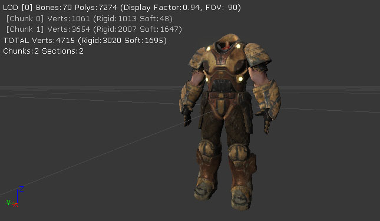
自定义动画通知 (Custom AnimNotify) 按钮
可以将按钮添加到工具栏来创建一种具有预设属性值的指定AnimNotify类，而不是通过标准工具栏按钮创建的空通知容器。最多可以指定三个自定义按钮，工具提示将会显示每个按钮会被束缚在什么上。 现在点击这个按钮将会创建具有通知对象（从定义的类或原型中）、可以设置持续时间的选项和/或一个固定的开始时间的通知。
现在点击这个按钮将会创建具有通知对象（从定义的类或原型中）、可以设置持续时间的选项和/或一个固定的开始时间的通知。
 这些自定义按钮由在
这些自定义按钮由在 [AnimSetViewer] 下的 Editor.ini 中设置的 config 变量驱动，这些变量会指定要使用的数据，例如通知类或原型。
ini 设置示例：
[AnimSetViewer] ;定义一个可以分配诸如Engine.AnimNotify_FootStep或SwordGame.AnimNotify_FX这样的通知类的自定义通知按钮 ;或使用一个诸如E_AnimNotify.FootStep_Left这样的原型（假设E_AnimNotify是一个包） AnimNotifyCustom0=B_Player_Anims.Notifies.AnimTrail_Left ;这个自定义通知按钮可以通过持续时间进一步修改，如果是负数，那么会将起点向后拉，将终点放在光标点上。 AnimNotifyCustom0Duration=1.0 ;还可以指定一个固定的开始时间，将通知设置在这个时间，不需要拖到想要设置的点上。 AnimNotifyCustom0FixedStart=0.45